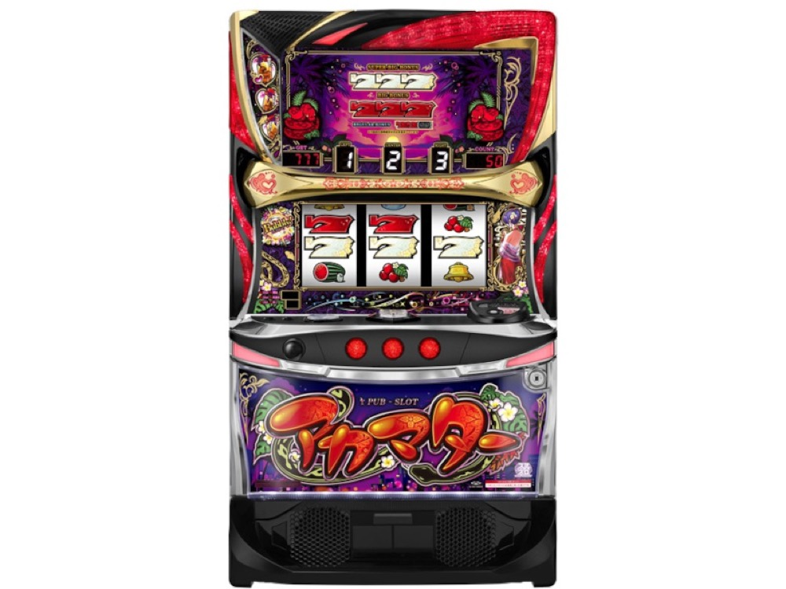

Lアカマター
純増約6枚の疑似ボーナス。32G天国からボトルキープ連へ。
- 導入
- 2026年12月導入予定
- メーカー
- オーイズミ
- 分類
- パチスロ
主要スペック
2026年12月7日導入予定。3種類の疑似ボーナス、天国、1G連ストック、約75%ループのバブリーモードを搭載します。
- 設定1初当り約1/330.0
- 設定6初当り約1/277.4
- バブリーモード約75%ループ
Lアカマターの見どころと計算条件
2026年12月7日導入予定。3種類の疑似ボーナス、天国、1G連ストック、約75%ループのバブリーモードを搭載します。
Lアカマターを数字で早分かり
ハブランプ告知から疑似ボーナス、バブリーモードまでの流れと、設定ごとの結果差を固定レートで比較できます。
5段階設定の初当り
実機搭載設定1・2・4・5・6から均等抽選し、初当り約1/330.0〜約1/277.4を個別に使います。
設定3は未搭載扱いとして抽選対象から外します。
ボトルキープとバブリーモード
疑似ボーナスは約90枚・210枚・300枚で、いずれも純増約6.0枚/Gです。
32G天国でボトルを3個貯めた先のバブリーモードは約75%ループ。未公表の天国移行率はサイト内比較用抽選です。
平均Gと投資目安の計算
掲載する疑似ボーナス初当り約1/330は設定1基準です。当サイトでは50枚あたり28.2G、1,000円46枚貸しの固定条件から、設定1基準の平均投資目安を約12,700円と計算します。
シミュレーターでは設定1・2・4・5・6を均等抽選します。設定1・2・4・5・6で公開されている初当り値を個別に使います。公開されていない特化ゾーン・上位到達率の設定差は加えません。 換金は5.2枚交換で固定し、結果とランキングに設定を表示します。
シミュレーション結果の見方
当るまでハブランプ告知・疑似ボーナスまでのゲーム数
設定設定1・2・4・5・6から抽選された今回の設定
上位到達天国3連とバブリーモードへの到達
最終収支差枚と5.2枚交換の収支目安
結果は自動で「マイ記録」に保存され、同じ機種を何回試したか、最高収支、勝率をあとから確認できます。
簡易シミュレーターについて
ハブランプ告知・疑似ボーナス・バブリーモードの流れを固定条件で体験できます。JavaScriptを有効にすると、この位置にシミュレーター、演出、マイ記録、機種別ランキングが表示されます。
結果は娯楽・確率理解のための参考表示です。金銭的価値や交換価値はなく、実際の勝敗や収支を保証しません。18歳未満の方の利用はお控えください。
Lアカマターのよくある質問
Lアカマターはどんな台？
2026年12月7日導入予定。 設定1初当り約1/330.0が主な確認ポイントです。
Lアカマターの平均投資目安は？
設定1基準の疑似ボーナス初当り約1/330と、50枚あたり28.2G・46枚貸しの固定条件から、平均12,700円を目安として表示します。実際の設定や遊技状況で結果は変わります。
設定とゲームの流れはどう抽選する？
開始時に設定1・2・4・5・6から1つを均等抽選し、ハブランプ告知、疑似ボーナス、天国3連、バブリーモードの順で到達を判定します。設定は最終結果とランキングに表示します。
収支はどう計算する？
1,000円46枚貸し・5.2枚交換の固定条件で投資、換金、収支目安を計算します。実店舗の再プレイ、持ちメダル、端数処理は含みません。